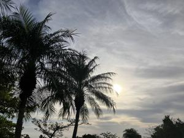
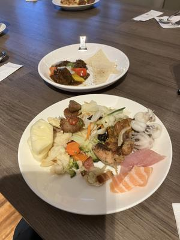
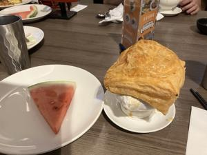
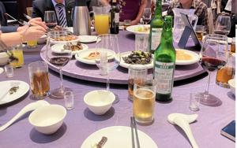
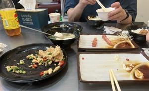
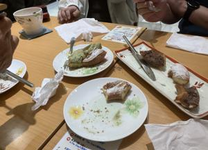
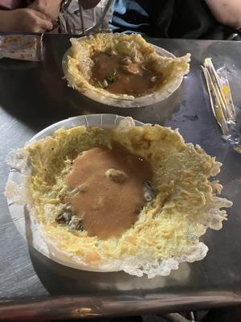
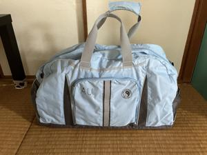

うるがいの話 ある日
最新: 台湾での食事【うるがいの話 ある日】とは 一日だけのプログです
『うるがいの話』の最新一日だけのプログで、通信料が少なく経済的だ。カニの画像をクリックすると全ての日付が載る『うるがいの話』サイトを表示します
|
|
【うるがいの話】 うるがい(ｳﾙｶﾞｲ urugai)とは、『もずくがに』の名前でとても大きくなります。 |
|---|---|
|
|
【カミマヤーの話】 猫のことを方言でマヤーといいます。カミマヤー（kamimayaa）とは、神の猫のことです。 |
|
【たながぁの音楽】 たながぁ（ﾀﾅｶﾞｰ tanagaa）とは手長えびのことで、何種類かあり大きいのは車 エビぐらいになります。 |

|
【ぶながぁの話】 ぶながぁ(ﾌﾞﾅｶﾞｰ bunagaa)とは、赤い髪の毛、赤い身体、そして身長は１ｍ２０ｃｍ ぐらい、川の蟹を食べているの目撃された。場所は沖縄県国頭郡大宜味村のと ある村僕の隣近所に住んでいる爺さんから、聞いた話です。 |
|
|
【ギーマの話】 ギーマ(giima)とは、山原の里山に咲くスズランに似た、 花を付けます。実は食べられます、 気が付くと口の周りが紫になっています。 |
2026年05月02日 (土）台湾での食事
16:59

那覇空港の出発搭乗口で、『２番席のうるがい様』とマイクで呼
ばれる。座る筈の座席が汚れていると、４番への席の移動をお願
いされた。右側の席だったが、左側の窓口と真ん中を割り当てら
れ、通路側は空だった。通路を挟んでコドモの友達とゴマ、そし
てコドモ、窓際は他人でした。
台湾一日目の夕食は、ホテルで豪華なバイキングでした。


２日目の夕食も、円卓でのホテルで豪華な料理でした。

３日目の昼食は、ローカルな食堂です。食べる前に撮るべきだっ
た。

３日目のおやつは、コドモが住んでいる近所のドーナル屋さんで
す。ドーナツを油で揚げる料理で、昔給食で食べた揚げパンの食
感でした。

３日目の夕食は、夜店で子供が薦めた物食べる。下は、牡蠣が入
った玉子焼き

朝食は、ファミリーマートとセブンイレブンでサンドイッチやお
にぎりを買いました。微妙な味でした。全体的に味が濃いです。
子供が、沖縄に帰ってくるときあっさりとしたものを食べたいと
よく言います。納得
旅行には、沢山荷物が入る昔の手提げバッグを持っていきます。
今回は、荷物が多く１２キロ以上でした。これを、下げて移動す
るのかと、ウンザリしていたのですが、フと気付くとキャリーケ
ースがあるではないですか。今回、日本酒２瓶を持っていくため
普段は利用しない子供が使っていた頑丈な、キャリーケースに入
れていた。手提げバッグをキャリーケースに乗せて移動、楽ちん
。

帰りの飛行機も座席は、２番目で予約。一列目は、行きも帰りも
空席でした。飛行機から降りるのが、早いこともあり、いつか先
頭になっていました。もう、慣れたものです。